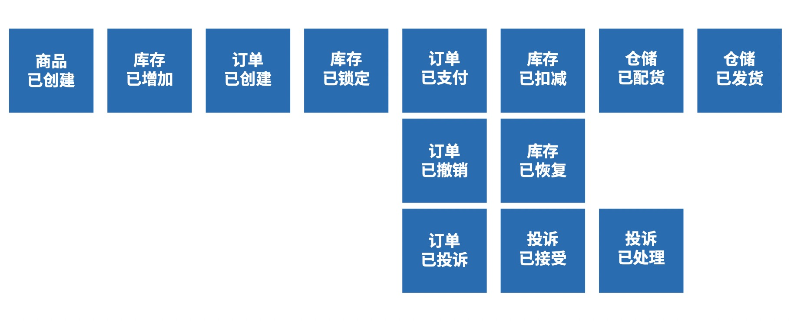

浅谈领域建模
什么是领域
领域是指组织的业务范围以及在其中所进行的活动，也就是平台能力需要支撑的业务范围。因此，为了构建出平台能力，需要对业务领域进行深入的理解和设计。
在业务架构部分，将进行领域战略层级的建模，主要包括:“子域”、“领域对象”、“领域事件” 部分的设计。

领域事件识别
领域事件(Domain Event): 是领域专家关心的，在业务上真实发生的事件，这些事件对系统会产生重要的影响，如果没有这些事件的发生，整个业务逻辑和系统实现就不能成立。我们可以通过领域事件对过去发生的事情进行溯源，因为过去所发生的对业务有意义的信息都会通过某种形式保存下来。 比如:“用户地址已更新”、“订单已发货” 等领 域事件。
领域事件对系统常见的影响有:
• 对内
- 产生了某种数据
- 触发了某种流程或事情
- 状态发生了某种变化
•对外
- 发送了某些消息
目前比较常用的领域事件识别方法是“事件风暴 (Event Storming)”，
主要步骤如下:
• 邀请业务专家(或领域专家)和技术专家共同 参与事件风暴工作坊，其它参与角色按需补充。
• 明确和选择需要分析的业务场景。
• 确定起始事件和结束事件，事件以“XXX 已 YYY”的形式进行命名(对于英文版过去完成时的中文表达方法)。
• 根据场景和业务复述的复杂度，决定以时间线的哪个方向开始梳理事件(正向或逆向)【注】有些理论会要求从后往前识别。
• 以先发散再收敛的方式，按照时间线的先后顺序和并行关系，补充和完善领域事件。
• 使用“规则”抽象分支条件或复杂的规则细节，通过抽象降低分支复杂度，规则以“XXX规则” 的名词形式进行命名。
• 完成一遍事件梳理之后，通过问问题的方式，逆向检查(Reverse Check)事件流的逻辑合理性，例如:
- 该事件真的需要在系统实现的时候考虑吗?
- 该事件如果存在，那它的前提条件是什么?
- 该事件如果要产生，那它的前一个事件必须是?
• 重复以上步骤，迭代式的完成全部领域事件的识别。

领域对象识别
领域对象(Domain Object):是对业务的高度抽象，作为业务和系统实现的核心联系，领域对象封装和承载了业务逻辑，是系统设计的基础。
领域建模中重要的部分之一就是对“领域对象”及 领域对象之间关系的识别和设计。而领域对象识别 将基于前面领域事件识别的结果开展。
领域对象，通常包含(但不限于):
• 领域事件中出现了的名词;
• 如果没有信息系统，在现实中会看得见摸得着的事物(例如订单);
• 虽然在当前业务中看不见摸不着，但是可以在未来抽象出来的业务概念。
在领域驱动设计(Domain-Driven Design)中一般存在三类领域对象:
聚合根: 是领域对象的根节点，具有全局标识，对象其它的实体只能通过聚合根来导航;
如订单可以分为订单头和订单行，订单头是聚合根，它包含了订单基本信息;订单行是实体，它包含订单的明细信息，聚合跟所代表的聚合实现了对于业务一致性的保障，是业务一致性的边界。
实体: 是领域对象的主干，具有唯一标识和生命周期，可以通过标识判断相等性，并且是可变的，如常见的用户实体、订单实体;
值对象: 实体的附加业务概念，用来描述实体所包含的业务信息，无唯一标识，可枚举且不可变，如收货地址、合同种类等等。
业务架构只负责初步和整体识别领域对象，而对领域对象的分类(聚合根、实体、值对象)和战术层级的详细设计将在应用架构设计部分完成。
领域对象识别的主要步骤如下:
• 对每一个领域事件，快速识别或抽象出与该领域事件最相关(或隐含的)的业务概念，并将其以名词形式予以贴出。
• 检查领域名词和领域事件在概念和粒度(例如数量，单数还是集合)上的一致性，通过重命名的方式统一语言，消除二义性。
• 如果在讨论过程中，有任何因为问题澄清和知识增长带来的对于之前各种产出物的共识性调整，请不要犹豫，立刻予以调整和优化。
• 重复以上步骤，迭代式的完成全部领域对象的识别。


子域划分

子域(Subdomain):是对问题域的澄清和划分， 同时也是对于资源投入优先级的重要参考。比如: “订单子域”、“物流子域”等，子域的划分仍属于业务架构关注范畴。
核心域(Core Domain): 是当前产品的核心差异化竞争力，是整个业务的盈利来源和基石，如果核心域不存在那么整个业务就不能运作。对于核心域，需要投入最优势的资源(包括能力高的人)， 和做严谨良好的设计。
支撑域(Supporting Subdomain): 解决的是支撑核心域运作的问题，其重要程度不如核心域，但具备强烈的个性化需求，难以在业内找到现成的解决方案，需要专门的团队定制开发。
通用域(Generic Subdomain): 该类问题在业内非常常见，所以很可能有现成的解决方案，通过购买或简单修改的方式就可以使用。
子域划分的主要步骤如下:
根据“每一个问题子域负责解决一个有独立业 务价值的业务问题”的视角出发，可以通过疑问句的方式来澄清和分析子域需要解决的业务问题，例如“如何进行库存管理?(英文描述 类似 How to…?)”。
利用虚线，将解决同一个业务问题的限界上下文以切割图像的方式划在一起，并以“XXX 子域” 的形式对每个子域进行命名。
根据三种类型的子域定义，共同结合业务实际 (或者参考设计思维中的电梯演讲)，确定每个子域的子域类型

识别对象是否是聚合根
假设有一个业务系统，里面有项目，项目成员的概念，只有项目成员才能访问该项目。这个例子中，项目成员是否是聚合根？
假设这个系统是一个任务管理系统，支持用户创建项目，项目管理员可以设置项目的成员，项目成员可以在项目下创建任务，并把任务分配给其他成员。
在我看来，成员和任务，相对项目而言是平等的，他们都是项目下的业务数据，我们不能因为他们在某个项目下才有意义而把它们聚合在项目下
判断一个对象是否是独立聚合根，一般就是看创建该对象的场景是否是独立的。判断一个聚合根是否要聚合其他实体，主要看其是否关心其他实体的存在，以及从自身完整性的考虑。
场景是否是独立怎么理解的？
针对上面的例子，创建项目，添加项目成员，创建任务，分别是三个不同的业务场景，分别对应三个聚合根；项目聚合根不关心下面有哪些成员，哪些任务。项目的目的只是为了隔离业务数据，所以对于业务数据来说，项目只是一个分类标识
我们设计领域模型时不能以用户为中心作为出发点去思考问题，不能老是想着用户会对系统做什么；而应该从一个客观的角度，根据用户需求挖掘出领域内的相关事物，思考这些事物的本质关联及其变化规律作为出发点去思考问题。
领域模型是排除了人之外的客观世界模型，但是领域模型包含人所扮演的参与者角色，但是一般情况下不要让参与者角色在领域模型中占据主要位置，如果以人所扮演的参与者角色在领域模型中占据主要位置，那么各个系统的领域模型将变得没有差别，因为软件系统就是一个人机交互的系统，都是以人为主的活动记录或跟踪；比如：论坛中如果以人为主导，那么领域模型就是：人发帖，人回帖，人结贴，等等；DDD的例子中，如果是以人为中心的话，就变成了：托运人托运货物，收货人收货物，付款人付款，等等；因此，当我们谈及领域模型时，已经默认把人的因素排除开了，因为领域只有对人来说才有意义，人是在领域范围之外的，如果人也划入领域，领域模型将很难保持客观性。领域模型是与谁用和怎样用是无关的客观模型。归纳起来说就是，领域建模是建立虚拟模型让我们现实的人使用，而不是建立虚拟空间，去模仿现实。
参考
- https://mp.weixin.qq.com/s/UOr0zRCxy1j__-uaEBt4fA
- ThoughtWorks现代企业架构框架白皮书